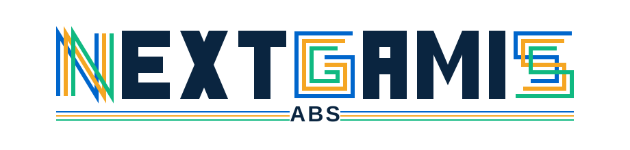

Kusimamia, kuendesha, kutunza kumbukumbu, na kufuatilia ukuaji wa biashara yako ya uwakala.
Toleo 1.0.0 · SHA256SUMS.txt · Matoleo yote
| Mfumo | Inahitajika |
|---|---|
| Windows 10 na 11 | 64-bit pekee |
| Ubuntu 20.04+, Debian 11+, Mint 20+, Kali, Fedora 30+, RHEL/Rocky 9+, openSUSE Leap 15.3+ | glibc 2.29 au zaidi |
install.batinstall.bat → Run as administratortar xzf NEXTGAMIS_ABS_1.0.0_Linux_x64.tar.gz
cd abs_dist_linux
sudo bash install.shHakuna intaneti wala vifurushi vya ziada vinavyohitajika kusakinisha au kutumia.
| Mfumo | Jinsi |
|---|---|
| Windows | Double click aikoni ya NEXTGAMIS ABS kwenye Desktop au Start Menu |
| Linux | Double click aikoni kwenye Desktop, au itafute kwenye orodha ya programu |
Kwa Linux, kama aikoni haionekani kwenye Desktop, bonyeza Activities
au Show Applications, andika NEXTGAMIS. Ukiiona,
Right click → Add to Favorites ili ibaki kwenye panel ya
kushoto.
Kama bado haionekani, komandi hii hufanya kazi daima:
cd /opt/nextgamis-abs && ./nextgamis-absUnapoifungua mara ya kwanza, programu itaonyesha Machine ID yako. Tutumie taarifa hizi tano:
Tuma kwenda sales@tssfl.co au WhatsApp +255 762 896 544.
Kama upo Dar es Salaam tunaweza kukusakinishia, au unaweza kuchukua kwetu kwenye flash — bila kupakua, bila bando.
Pia tunaweza kukuelekeza hatua kwa hatua kwa simu, popote ulipo.
+255 762 896 544 piga simu · SMS · WhatsApp